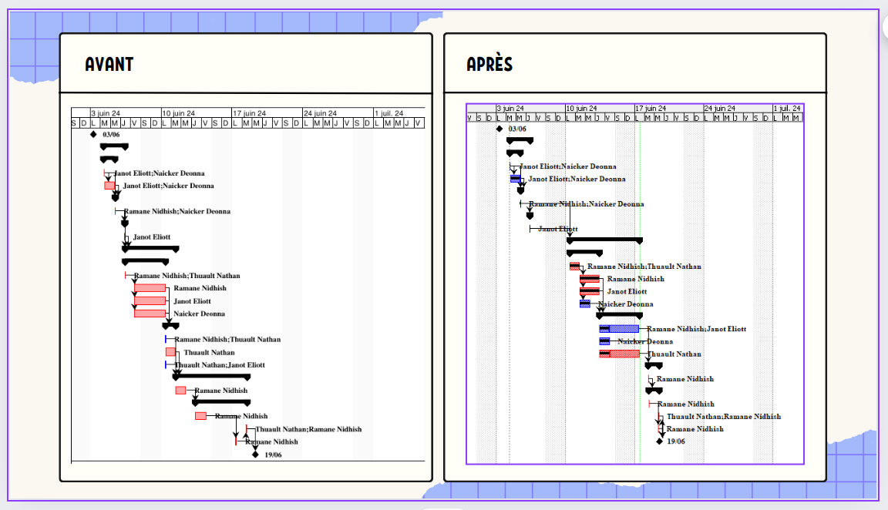
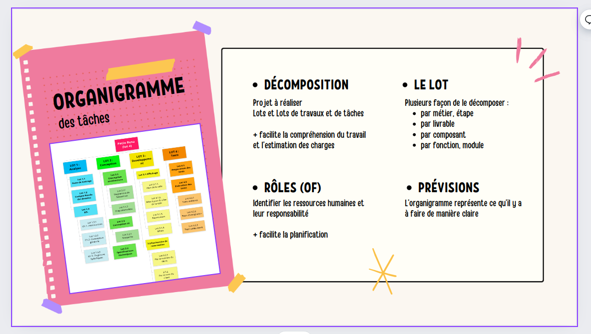
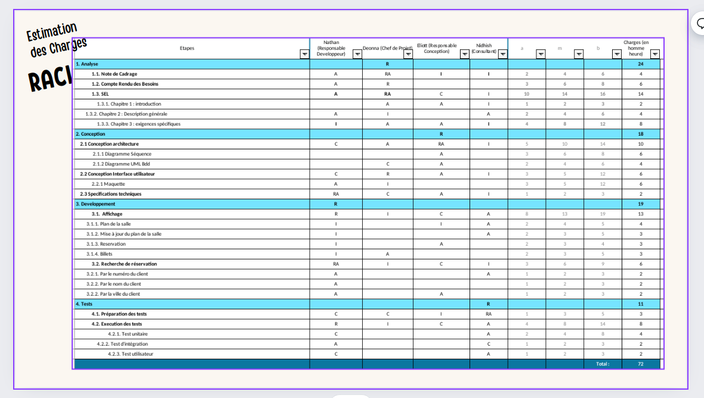

SAE 2.05 \
Gestion de projet - "Le Patio"
Conduire un Projet - Compétence 5
Plannifier la réalisation d'une application de gestion de réservation d'une salle de spectacle en identifiant les besoins métiers des clients et des utilisateurs. Cela en mettant en place des outils de gestion de projet
Étapes \
- Analyse du besoin : Rédaction Note de Cadrage & SEL
- Réalisation de l'OT et de la matrice RACI
- Estimation des charges et coûts
- Gantt previsionnel et réel
Images du Projet \
SEL, GANTT, OT
  Outils \
- ProjectLibre
- Gloomaps
- Canva
- GoogleDocs